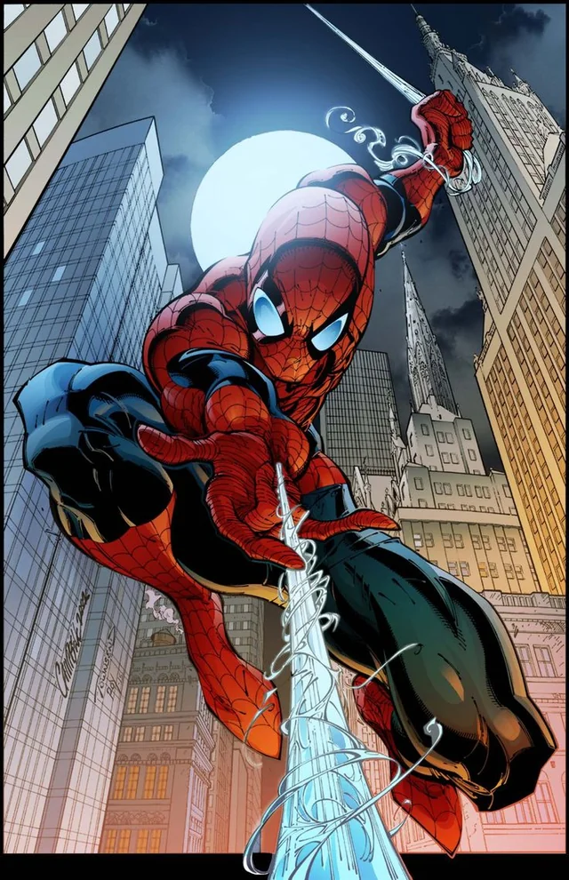
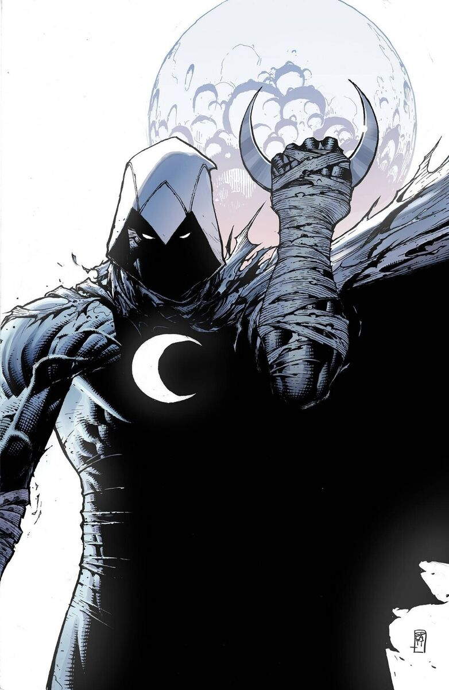
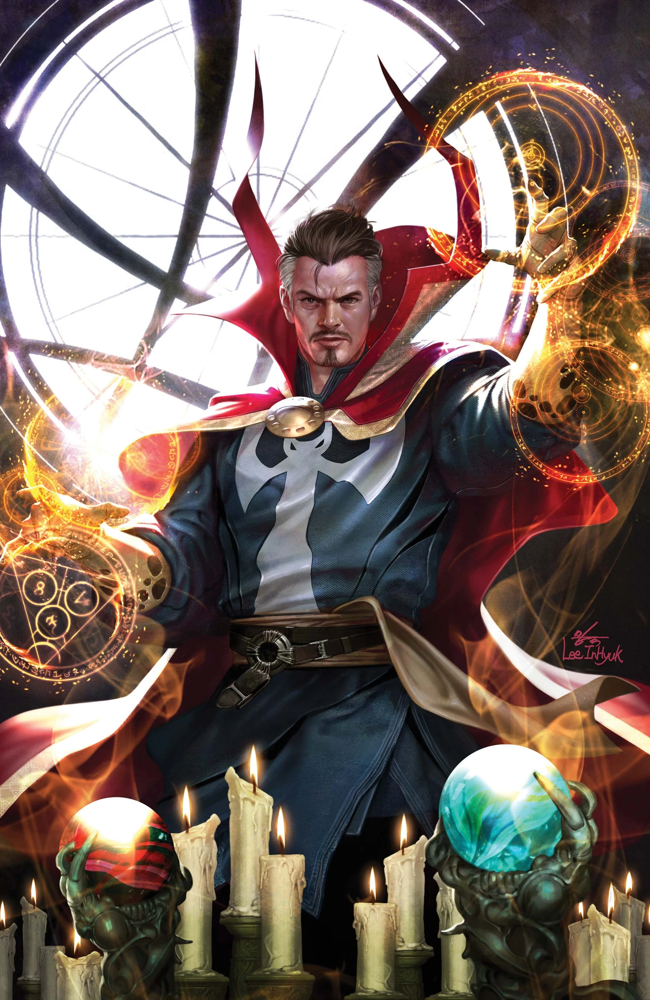

Peter Parker
Spider-Man
MARVEL
Primera aparicion: 1962
Tras ser mordido por una araña modificada, Peter Parker obtiene poderes sobrehumanos y se convierte en Spider-Man, un héroe que protege Nueva York mientras aprende a equilibrar su vida y su responsabilidad.
Marc Spector
Moon Knight
MARVEL
Primera aparicion: 1975
Es un vigilante enmascarado que sirve como el avatar del dios egipcio Khonshu. Detrás de la máscara está Marc Spector, un hombre que comparte su mente con otras personalidades como Steven Grant y Jake Lockley.
Stephen Strange
Doctor Strange
MARVEL
Primera aparicion: 1963
Stephen Strange, un neurocirujano brillante pero arrogante, ve su vida desmoronarse tras un accidente que daña sus manos. En busca de una cura, viaja al Himalaya y encuentra a The Ancient One, quien le revela un mundo de magia y poderes místicos.
Eddie Brock
Venom
MARVEL
Primera aparicion: 1988
Venom es un anti-héroe y uno de los villanos más populares de Marvel. Es un simbionte alienígena que se une a Eddie Brock, un periodista que busca venganza contra Spider-Man.
Elizabeth Braddock

Psylocke
MARVEL
Primera aparicion: 1976
Psylocke, cuyo nombre real es Elizabeth Braddock, es una mutante con habilidades telepáticas y un dominio avanzado del combate cuerpo a cuerpo.